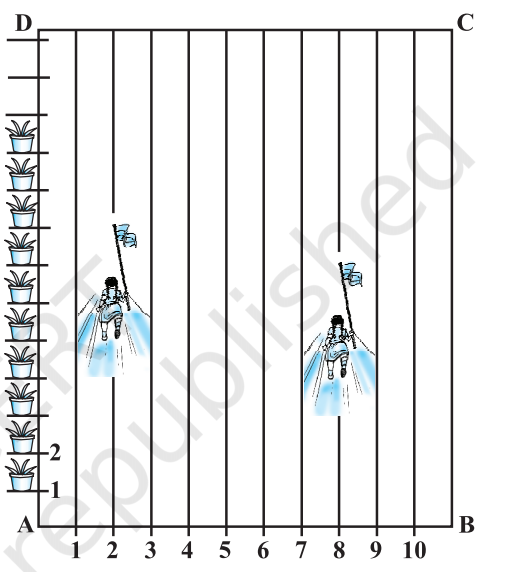

Mathematics solution NCERT
Class 10 - Chapter 7: Coordinate Geometry
Exercise 7.2
Q1. Find the coordinates of the point which divides the join of (−1, 7) and (4, −3) in the ratio 2 : 3.
Let A(−1, 7) and B(4, −3).
The point P divides AB internally in the ratio 2 : 3.
Using the Section Formula:
P = [ (mx₂ + nx₁)/(m + n), (my₂ + ny₁)/(m + n) ]
Here,
x₁ = −1, y₁ = 7
x₂ = 4, y₂ = −3
m = 2, n = 3
x-coordinate:
= [2(4) + 3(−1)]/(2 + 3)
= (8 − 3)/5
= 1
y-coordinate:
= [2(−3) + 3(7)]/(2 + 3)
= (−6 + 21)/5
= 3
Required point = (1, 3)
Q2. Find the coordinates of the points of trisection of the line segment joining (4, −1) and (−2, −3).
Let A(4, −1) and B(−2, −3).
The points of trisection divide the line segment in the ratios 1 : 2 and 2 : 1.
First point P (ratio 1 : 2)
P = [ (1×(−2) + 2×4)/(1 + 2), (1×(−3) + 2×(−1))/(1 + 2) ]
= (6/3, −5/3)
= (2, −5/3)
Second point Q (ratio 2 : 1)
Q = [ (2×(−2) + 1×4)/(2 + 1), (2×(−3) + 1×(−1))/(2 + 1) ]
= (0/3, −7/3)
= (0, −7/3)
The points of trisection are (2, −5/3) and (0, −7/3).
Q3. To conduct Sports Day activities, in your rectangular shaped school ground ABCD, lines have been drawn with chalk powder at a distance of 1m each. 100 flower pots have been placed at a distance of 1m from each other along AD, as shown in Fig. Niharika runs 1/4 th the distance AD on the 2nd line and posts a green flag. Preet runs 1/5 th the distance AD on the eighth line and posts a red flag. What is the distance between both the flags? If Rashmi has to post a blue flag exactly halfway between the line segment joining the two flags, where should she post her flag?

Source- NCERT
From the figure,
AD = 100 m
The lines are 1 m apart.
Niharika runs on the 2nd line and posts a green flag at a distance 1/4 of AD from A.
Green flag coordinates = (2, 25)
Preet runs on the 8th line and posts a red flag at a distance 1/5 of AD from A.
Red flag coordinates = (8, 20)
Distance between the two flags
d = √[(8 − 2)² + (20 − 25)²]
= √[36 + 25]
= √61 m
≈ 7.81 m
Position of Rashmi's Blue Flag
The blue flag is to be posted at the midpoint of the line segment joining the two flags.
Midpoint Formula:
M = [ (x₁ + x₂)/2 , (y₁ + y₂)/2 ]
= [ (2 + 8)/2 , (25 + 20)/2 ]
= (5, 45/2)
= (5, 22.5)
Distance between the flags = √61 m.
Rashmi should post the blue flag at (5, 22.5).
Q4. Find the ratio in which the line segment joining the points (−3, 10) and (6, −8) is divided by (−1, 6).
Let A(−3, 10), B(6, −8) and P(−1, 6).
Suppose P divides AB in the ratio m : n.
Using Section Formula:
−1 = [6m − 3n]/(m + n)
⇒ −m − n = 6m − 3n
⇒ 2n = 7m
⇒ m : n = 2 : 7
Verification using y-coordinate:
6 = [−8m + 10n]/(m + n)
⇒ 6m + 6n = −8m + 10n
⇒ 14m = 4n
⇒ m : n = 2 : 7
Hence verified.
The point (−1, 6) divides the line segment internally in the ratio 2 : 7.
Q5. Find the ratio in which the line segment joining A(1, −5) and B(−4, 5) is divided by the x-axis. Also find the coordinates of the point of division.
Let P be the point where AB intersects the x-axis.
Since P lies on the x-axis, its y-coordinate is 0.
Suppose P divides AB in the ratio m : n.
Using the Section Formula:
0 = [m(5) + n(−5)]/(m + n)
5m − 5n = 0
m = n
Therefore,
m : n = 1 : 1
Now find the coordinates of P:
x = [m(−4) + n(1)]/(m + n)
= (−4 + 1)/2
= −3/2
y = 0
Ratio = 1 : 1
Point of division = (−3/2, 0)
Q6. If (1, 2), (4, y), (x, 6) and (3, 5) are the vertices of a parallelogram taken in order, find x and y.
Let
A(1, 2), B(4, y), C(x, 6), D(3, 5)
In a parallelogram, diagonals bisect each other.
Therefore, midpoint of AC = midpoint of BD.
Midpoint of AC
= ((1 + x)/2, (2 + 6)/2)
= ((1 + x)/2, 4)
Midpoint of BD
= ((4 + 3)/2, (y + 5)/2)
= (7/2, (y + 5)/2)
Equating x-coordinates:
(1 + x)/2 = 7/2
1 + x = 7
x = 6
Equating y-coordinates:
4 = (y + 5)/2
8 = y + 5
y = 3
x = 6 and y = 3
Q7. Find the coordinates of a point A, where AB is the diameter of a circle whose centre is (2, −3) and B is (1, 4).
The centre of a circle is the midpoint of its diameter.
Let A = (x, y)
B = (1, 4)
Centre = (2, −3)
Using the midpoint formula:
((x + 1)/2, (y + 4)/2) = (2, −3)
(x + 1)/2 = 2
x + 1 = 4
x = 3
(y + 4)/2 = −3
y + 4 = −6
y = −10
Coordinates of A = (3, −10)
Q8. If A and B are (−2, −2) and (2, −4), respectively, find the coordinates of P such that
AP = (3/7) AB and P lies on the line segment AB.
Since
AP = (3/7)AB
PB = (4/7)AB
Therefore,
AP : PB = 3 : 4
Using the Section Formula:
P = [(3×2 + 4×(−2))/(3+4), (3×(−4) + 4×(−2))/(3+4)]
= [(-2)/7, (-20)/7]
P = (−2/7, −20/7)
Q9. Find the coordinates of the points which divide the line segment joining A(−2, 2) and B(2, 8) into four equal parts.
To divide AB into four equal parts, three points are required.
These points divide AB in the ratios:
1 : 3, 2 : 2 and 3 : 1
First Point P (1 : 3)
P = [(1×2 + 3×(−2))/4, (1×8 + 3×2)/4]
= (−1, 7/2)
Second Point Q (2 : 2)
Q = [(2×2 + 2×(−2))/4, (2×8 + 2×2)/4]
= (0, 5)
Third Point R (3 : 1)
R = [(3×2 + 1×(−2))/4, (3×8 + 1×2)/4]
= (1, 13/2)
The required points are:
(−1, 7/2), (0, 5), (1, 13/2)
Q10. Find the area of a rhombus if its vertices are (3, 0), (4, 5), (−1, 4) and (−2, −1) taken in order.
Let the vertices be:
A(3, 0), B(4, 5), C(−1, 4), D(−2, −1)
Diagonal AC:
AC = √[(−1 − 3)² + (4 − 0)²]
= √(16 + 16)
= √32
= 4√2
Diagonal BD:
BD = √[(−2 − 4)² + (−1 − 5)²]
= √(36 + 36)
= √72
= 6√2
Area of Rhombus
= (1/2) × (Diagonal 1) × (Diagonal 2)
= (1/2) × (4√2) × (6√2)
= (1/2) × 24 × 2
= 24 square units
Area of the rhombus = 24 square units.